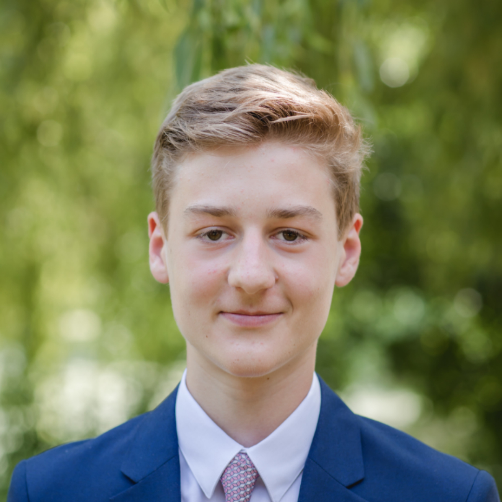

Mein Name ist Leonardo Benini und ich wurde am 21.4.2003 in Boston, USA geboren. Ich habe dort bis zu meinem dritten Lebensjahr gelebt und bin dann nach München gezogen. Dort habe ich dann den Kindergarten, die Grundschule und die ersten zwei Jahre des Gymnasiums besucht.
About Me
In der siebten Klasse bin ich mit meiner Familie nach London gezogen und habe dort drei Jahre gelebt. Seit diesem Schuljahr bin ich wieder in München und ich fühle mich sehr wohl in meiner alten Heimat. Aktuell besuche ich die 10. Klasse im Gymnasium Ottobrunn. In meiner Freizeit gehe ich drei Mal die Woche zum Leichtathletik Training, spiele Cello und löse gern Rubik’s Cube Würfel.
Coding History
Angefangen hat alles mit simplen Python Projekten und Spielen, die man gegen die Konsole spielen konnte. Danach bin ich zum Arduino übergegangen und habe einen fahrenden Roboter gebaut, der mehr oder weniger einer weißen Linie hinterherfahren kann. In der Frustration, dass der Roboter manchmal einfach nicht so gefahren ist wie ich wollte, bin ich wieder zurückgekommen zu Python und habe dann mit den turtle Modul Spiele gebaut, die aussehen wie aus den 80igern. Ich habe dabei aber viel gelernt und mir ging es viel mehr um den Prozess des Programmierens als das Ergebnis selbst. Nach einer längeren Pause hat mich das ganze machine learning Thema gepackt und ich habe angefangen, erst mit sklearn simple Programme zu bauen und dann später mit tensorflow richtige neuronale Netzwerke zu entwickeln. Meine Datasets habe ich von kaggle bekommen, eine Website, die Dataanalysis Wettkämpfe austrägt - aber ich habe natürlich nur die einfachen Projekte gemacht, wie Mnist, Titanic, etc. Am Anfang des Schuljahres kam der Bundeswettbewerb Informatik auf und ich habe die Aufgaben schnell mit Python erledigt. Mein aktuelles Projekt ist, mit Django Webseiten zu programmieren. Hierbei lerne ich natürlich auch Html5 und CSS. Django ist ein Webframework, das Python als Backend benutzt, und sich somit für mich anbietet :)